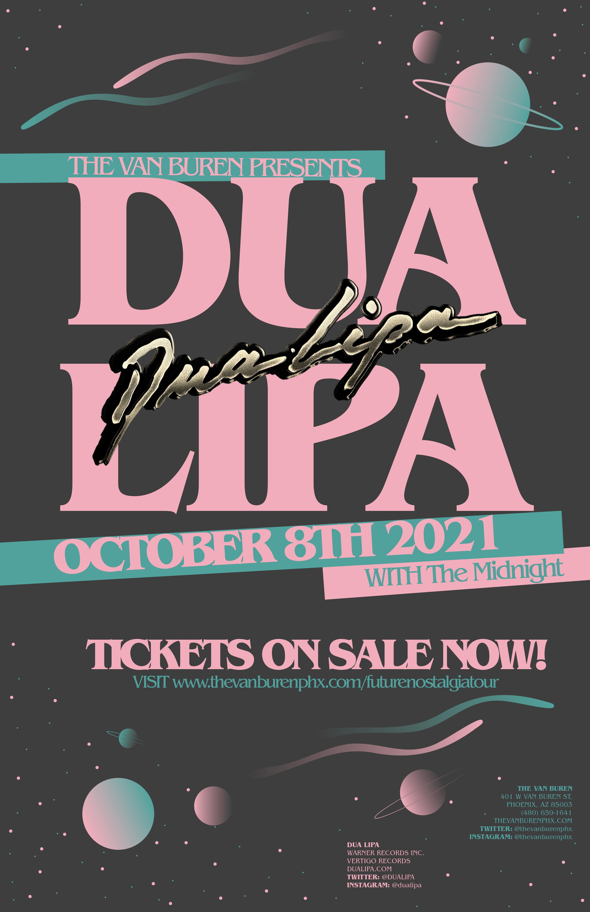

DUA LIPA toured the US with her Future Nostalgia tour in 2021. The idea behind this flyer was to make it available in a 8.5 x 11 flyer form or poster form. The concept follows a new take on the theme, revolving around Dua Lipa's "Future Nostalgia" album, and mixing in some fictional elements. Such as, having the opening act be The Midnight, a synthwave band that is famous for its 80s-esque synth music. This poster/flyer was accomplished within Adobe InDesign.
